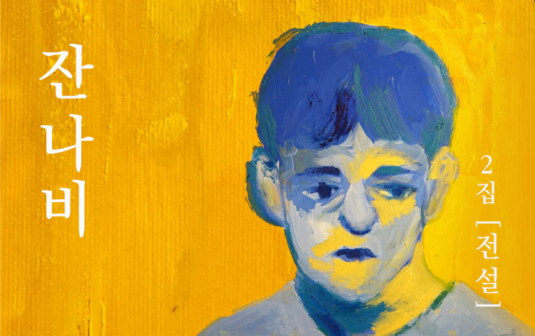

- 2ALBUM
- LEGEND
전설이란 앨범은 잔나비의 음악 세계을 완벽하게 보여준다. 일단 전체적으로 익살스럽거나, 화끈한 로큰롤의 느낌은 많이 축소 되었다. 과거 1집과 같은 느낌을 기대하는 팬들은 조금 아쉽게 느껴질 수도 있겠지만, 대신 잔나비가 대중적으로 크게 어필 할 수 있었던 이유는 아름답고 서정적인 멜로디와 가사가 극대화되었다.그래도 전설 나쁜 꿈 같은 곡들이 가진 사운드를 들어보면, 특유의 유치하지만 재미난 감각은 여전히 유지하고 있다는 것을 알 수 있다. 그나마 지적을 받을 만한 점은 다소 과하고 유난 스럽단 느낌이다.전체적으로 올드 팝의 향기가 강하지만, 각 트랙의 테이스트는 모두 다르다. 단 한 곡도 날림으로 쓰지 않고, 트랙마다, 확고한 개성을 살리려고 한 노력의 흔적이 드러난다. 이러한 레트로적 개성이 앨범을 마무리하는 꿈과 책과 힘과 벽은 예쁜 키보드 사운드는 인상적이였다.
잔나비는 촉촉한 감성으로 많은 사람들에게 부드럽게 인도한다. 킬링 트랙이 없는 것 같다는 게 아쉽긴 하지만, 전체적으로 준수한 퀄리티와 유기성, 흡입력을 자랑하기 때문에 큰 문제는 아니다.잔나비의 독보적인 사운드 전설은 드디어 잔나비에 취할 수 있는 앨범이다.